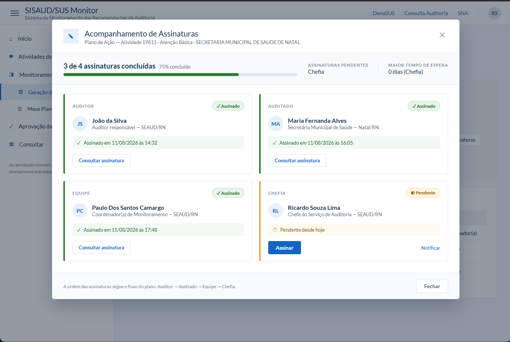
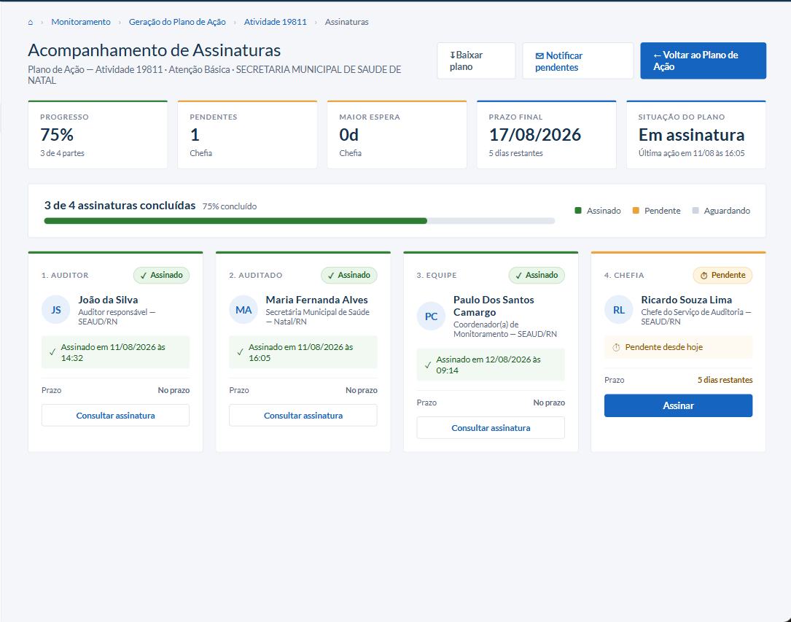
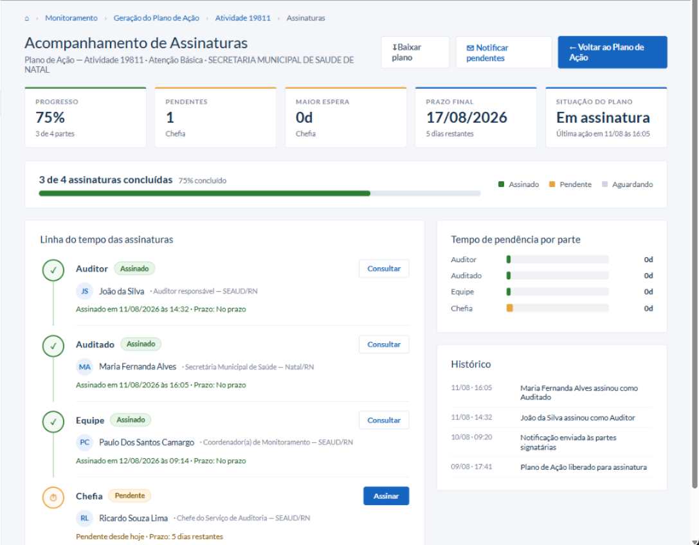
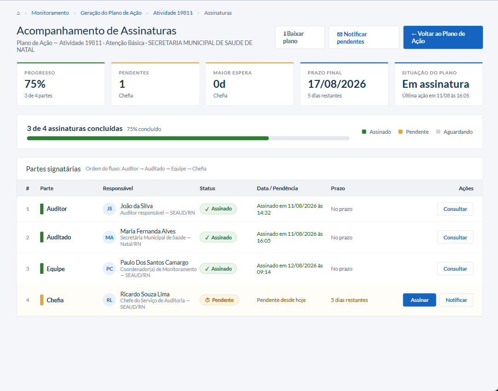
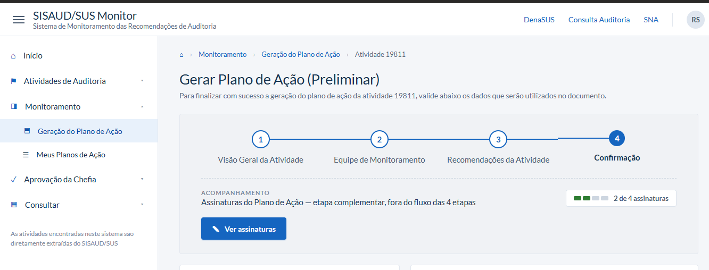
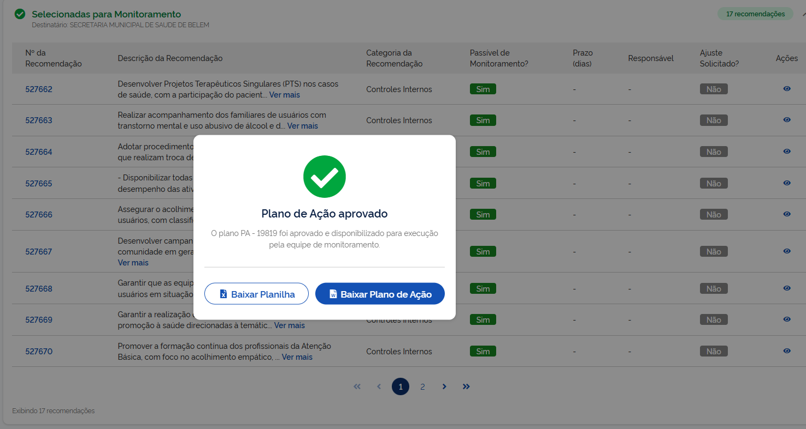
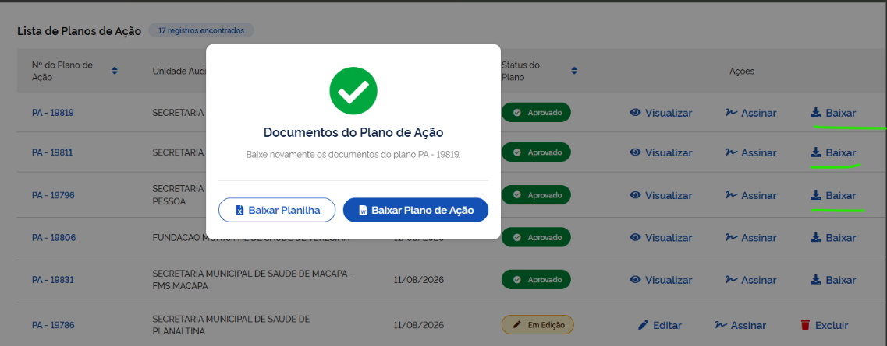

SISAUD/SUS Monitor · Monitoramento de Recomendações
O caminho de um Plano de Ação desde o rascunho aberto pelo auditor até a homologação pela Chefia — incluindo o passo de assinatura, já previsto no fluxo, mas ainda não implementado no sistema.
.docx e do
.xlsx antes de homologar, ou devolver, que volta o
plano ao auditor com pendências por recomendação até o reenvio.
Os critérios que o sistema aplica por trás de cada etapa do fluxo —
do início da criação do plano ao controle de quem pode fazer o quê.
Organizado em 12 grupos, cada regra com um código curto
(A1, B2...)
pra facilitar referência em conversa.
Como e quando o plano passa a existir de verdade no sistema, e por que reabrir a atividade não cria um segundo plano.
A1 Abertura é idempotente.
Sair da Etapa 1 para a etapa seguinte busca ou cria o plano da
atividade automaticamente: se já existe um (rascunho ou
aprovado), reaproveita; senão, cria um novo em
EM_EDICAO. Nunca duplica — o sistema garante um
único plano por atividade.
A2 Navegar entre etapas é livre.
Não há bloqueio de avanço para atividades que já têm plano
aprovado — foi uma decisão de produto. O aviso de "já existe
plano" aparece só como informativo na Etapa 1, sem impedir a
navegação.
Quais pendências de equipe o sistema cobra do auditor, e o que vale quando ele opta por não mexer nela.
B1 Três pendências possíveis, mostradas uma de cada vez.
O sistema identifica três problemas na equipe: nenhuma opção
escolhida (manter ou editar), nenhum membro informado, ou
membros informados sem coordenador definido.
B2 Falta de coordenador só é cobrada se já existe equipe.
Se a equipe está vazia, o sistema avisa só isso — não soma um
segundo aviso sobre coordenador ausente, pra não misturar as
duas mensagens.
B3 Um aviso só, pela causa mais básica primeiro.
Prioridade: falta escolher o modo → equipe vazia → falta
coordenador. É o mesmo texto que aparece tanto no aviso rápido
quanto no alerta da Etapa 4.
B4 Nenhuma opção vem marcada por padrão.
"Manter equipe atual" só é assumido no momento de exibir a
tela — nunca é gravado como escolha do usuário se ele não
decidiu de fato. Evita que o rascunho salvo registre uma
decisão que ninguém tomou.
B5 Ao manter a equipe, vale a equipe da auditoria.
Se o auditor não edita a Etapa 2, o plano usa a equipe que já
veio registrada na atividade de auditoria — nunca uma lista
vazia.
O que é obrigatório preencher em cada recomendação, e como a lista se organiza pra destacar o que falta ou foi pedido pela Chefia.
C1 Duas informações obrigatórias por recomendação.
Se ela deve ser monitorada e sua classificação (categoria).
C2 "Monitorar" não é mais escolhido manualmente — vem da categoria.
Ao selecionar a categoria da recomendação, o sistema já
determina se ela é monitorável, a partir do cadastro de
categorias. Não existe mais edição manual nem botão pra limpar
esse campo isoladamente.
C3 A ordem da lista é fixada na entrada da tela.
As recomendações com pendência da Chefia entram no topo
primeiro; essa ordem fica travada até o auditor sair e voltar
à Etapa 3 — preencher uma recomendação não faz ela "pular de
lugar" no meio da edição.
C4 Prioridade de destaque no topo: pendência da Chefia > pendência de preenchimento > preenchida.
Mesmo uma recomendação já preenchida sobe para o topo se a
Chefia pediu ajuste nela — o pedido da Chefia vem primeiro.
C5 Avançar da Etapa 3 não valida nada.
É possível ir para a Etapa 4 mesmo com campos vazios; a
validação de fato só acontece lá.
C6 O indicador verde é sempre visível; o vermelho só aparece depois de uma tentativa de avanço sem sucesso.
Não ver o verde ("preenchida") não é erro — o vermelho
("pendente") é um aviso que só liga quando o sistema barra o
avanço.
C7 "Limpar" apaga categoria, monitoramento e prazo de TODAS as recomendações da atividade.
Não só das filtradas na busca, nem só das marcadas no modo de
seleção múltipla — é uma ação deliberadamente ampla, porque
afeta a atividade inteira.
Como a edição em lote aplica um valor a várias recomendações de uma vez, sem gravar nada permanentemente.
C8 No modo múltiplo, o valor é aplicado a todas as recomendações selecionadas de uma vez;
no modo individual, só à recomendação aberta.
C9 Se as recomendações selecionadas têm valores diferentes, o campo aparece vazio.
Em vez de mostrar o valor de uma delas como se valesse para
todas — evita sugerir uma uniformidade que não existe.
C10 "Selecionar todos" marca a lista filtrada inteira, não só a página visível.
Marcar, mudar de página e marcar de novo dá o mesmo resultado
que marcar tudo de uma vez.
C11 A seleção múltipla não é salva.
É um estado temporário da tela, que sobrevive a navegar entre
páginas ou buscar dentro da mesma sessão de edição, mas se
perde ao sair.
O que precisa estar correto pra um plano avançar, e o que acontece por trás de cada mudança de status.
D1 Um plano só é válido quando equipe E recomendações estão, ambas, sem pendência.
D2 Pendência de equipe tem prioridade sobre pendência de recomendações no aviso.
É a mais básica e sua correção fica em outra etapa — pedir pra
corrigir recomendações primeiro faria o auditor voltar duas
vezes.
D3 A mesma validação controla tanto "Validar Informações" quanto "Aprovar".
Havendo pendência, o sistema mostra os alertas nas tabelas, um
aviso de erro, e bloqueia o clique.
D4 "Validar Informações" sem pendências abre a escolha entre permanecer em edição ou disponibilizar para a Chefia
(→ AGUARDANDO_APROVACAO).
D5 A validação em si é instantânea e local; o registro no sistema é só formalidade.
Uma falha de conexão nesse registro não impede o auditor de
continuar, porque o plano já foi considerado correto antes
disso.
D6 Antes de qualquer mudança de status, o rascunho é salvo imediatamente.
Sem esperar o salvamento automático de rotina — garante que o
servidor tenha a versão mais recente antes de disponibilizar
ou aprovar.
D7 "Aprovar" só se efetiva depois que os documentos são gerados com sucesso.
Se a geração falhar, o plano permanece
AGUARDANDO_APROVACAO — nunca é promovido a
aprovado sem os documentos prontos.
D8 A data de aprovação, não o status em si, é o sinal oficial de "plano finalizado".
Para os avisos e telas que dependem disso.
D9 O salvamento automático para de funcionar assim que o plano sai de "Em Edição".
Depois de disponibilizado ou aprovado, nada mais é salvo
automaticamente — evita sobrescrever um plano que já não está
mais em edição.
D10 O salvamento automático roda sozinho após um breve período de inatividade,
tanto para a equipe quanto para cada recomendação já
classificada.
D11 Ao abrir um plano, os dados vêm do servidor, não do que ficou salvo no navegador.
Como um plano pode ser editado por pessoas diferentes em
máquinas diferentes, o que está salvo no servidor sempre
prevalece — sem isso, a tela poderia aparecer em branco ou
desatualizada.
Quem pode editar o plano em cada status, e quando essa permissão volta ou se fecha de vez.
E1 Disponibilizado para a Chefia trava a edição só para quem elabora.
A Chefia continua podendo agir (aprovar ou solicitar ajustes).
Volta a ficar editável para o auditor quando a Chefia devolve o
plano.
E2 Aprovado trava a edição para todo mundo.
Ninguém mais edita ou exclui, nem quem elaborou nem a Chefia.
Só resta visualizar.
E3 Cada perfil vê só as ações que lhe cabem na Etapa 4.
O auditor vê Voltar/Excluir/Validar Informações; a Chefia vê
Voltar/Excluir/Solicitar Ajustes/Aprovar. Nenhum perfil vê as
ações do outro lado.
Quando os arquivos do plano são gerados, o que entra neles, e por que o download nunca é automático.
F1 "Aprovar" só se conclui quando os DOIS documentos são gerados.
O Plano de Ação e a Planilha de Monitoramento. Um documento
gerado não basta.
F2 Os dois downloads exigem clique explícito do usuário.
Nunca disparados automaticamente — o navegador bloqueia
silenciosamente o segundo de dois downloads simultâneos sem
gesto do usuário para cada um.
F3 Só entram nos documentos as recomendações marcadas como monitoráveis.
F4 Aprovar pela fila da Chefia usa uma fonte de dados diferente de aprovar pelo Wizard, mas gera os mesmos documentos.
O Wizard usa os dados que o próprio auditor está editando; a
fila reconstrói tudo a partir do que foi submetido, porque a
Chefia pode estar em outra máquina, sem visibilidade do
rascunho de ninguém.
F5 Na fila da Chefia, os documentos são gerados ANTES da aprovação — e uma falha na geração bloqueia a aprovação.
Evita que a Chefia veja um plano aprovado sem conseguir baixar
os arquivos correspondentes.
Como funciona o pedido de ajuste do plano inteiro — diferente do ajuste por recomendação (ver H).
G1 Nasce já como pedido enviado, não como rascunho.
Diferente do ajuste por recomendação (ver H), aqui é pedido e
envio no mesmo ato. Pode ser disparado tanto pelo auditor na
Etapa 4 quanto pela Chefia na fila de aprovação.
G2 O texto da solicitação é obrigatório.
Sem ele, o botão de envio fica desabilitado.
G3 Fechar a confirmação de envio não navega para outro lugar.
Diferente de "Aprovar", quem solicitou o ajuste permanece na
mesma tela.
O ciclo de vida de um ajuste pontual numa recomendação, de rascunho da Chefia até corrigido pelo auditor.
H1 Cada recomendação tem no máximo um ajuste ativo por vez.
Reabrir o registro numa recomendação que já tem ajuste edita o
existente, nunca acumula um segundo.
H2 O ajuste nasce como rascunho, visível só para a Chefia.
O auditor não sabe que existe até a Chefia efetivamente
enviar.
H3 O ajuste vira "Solicitado" no mesmo momento em que o plano é devolvido ao auditor.
Os dois acontecem juntos, não em dois passos separados —
evitando uma janela em que o plano voltasse devolvido com os
pedidos ainda invisíveis.
H4 O ajuste vira "Atendido" no mesmo momento em que o plano corrigido é disponibilizado de novo
pelo auditor.
H5 Quem decide o que cada pessoa vê é o sistema no servidor, não a tela.
A lista que chega ao navegador já vem filtrada pela permissão
de quem está olhando; qualquer filtro na tela é só
conveniência visual, não a garantia de sigilo.
H6 Reabrir uma recomendação já "Atendida" começa um ciclo novo.
O registro volta a rascunho, e a tela não pré-preenche o texto
anterior, para não reaproveitar por engano um texto que já foi
corrigido.
H7 Descrição do ajuste e justificativa são ambas obrigatórias para salvar,
com limite de caracteres em cada uma.
H8 Anexo tem limite de tamanho e tipos de arquivo aceitos, verificados também pelo sistema.
Não só pela seleção do navegador, que pode ser contornada
arrastando o arquivo direto.
H9 Só as informações do anexo são guardadas, não o arquivo em si.
Hoje não é possível baixar o anexo depois, só removê-lo; o
armazenamento do arquivo ainda não existe.
H10 O auditor só enxerga os ajustes já solicitados.
É o único status que aparece do lado dele; as telas da própria
Chefia mostram todos os status, incluindo os próprios
rascunhos.
As regras da fila de aprovação e do detalhe do plano — o que trava aprovar, e o que a Chefia vê.
I1 A fila de aprovação mostra só os planos disponibilizados e aguardando decisão.
I2 "Aprovar" fica desabilitado quando o plano tem ajuste de recomendação em aberto.
Conta rascunho e solicitado, mas não os já atendidos. Um
ajuste do plano inteiro, sem ligação a uma recomendação
específica, não conta para esse bloqueio.
I3 No detalhe do plano, "Aprovar" desaparece (não só desabilita) quando há ajuste pendente.
A Chefia já sinalizou que algo precisa ser corrigido; aprovar
por cima disso homologaria uma pendência aberta.
I4 As ações de aprovar/devolver só existem enquanto o plano está aguardando decisão.
Um plano já aprovado ou devolvido continua visível pra quem já
estava na tela, mas sem os botões de ação.
I5 O detalhe do plano mostra a fotografia do momento em que foi disponibilizado, não a lista atual.
Uma recomendação criada na auditoria depois desse momento não
aparece como se fizesse parte do plano.
I6 Recomendações com mais de um destinatário aparecem repetidas, uma vez em cada grupo.
É intencional — cada área precisa vê-la na sua própria lista.
A soma dos contadores por grupo pode passar do total de
recomendações do plano; não é erro.
I7 A tela distingue destinatário de responsável,
mesmo quando a informação de origem guarda os dois sob o mesmo
nome — a tradução acontece num único ponto, pra tela inteira
falar a linguagem certa.
I8 "Devolver para Ajustes" não pede mais um texto geral.
Reúne o que a Chefia já registrou recomendação a recomendação e
só pede confirmação. Fica desabilitado se nenhuma recomendação
tiver ajuste registrado.
I9 O resumo de devolução mostra uma linha por recomendação com pelo menos um ajuste,
ordenado pelo número da recomendação, excluindo as já
atendidas.
I10 A data/hora registrada na solicitação de devolução é a da abertura da tela,
não a de nenhum ajuste individual.
Como cada marco do plano fica registrado, sem esconder ciclos de devolução e reenvio.
J1 Cinco marcos são registrados, cada um no momento exato em que acontece de verdade:
criação, validação, disponibilização, ajuste solicitado,
aprovação.
J2 Não há junção de eventos repetidos — cada marco empilha um novo registro.
Um ciclo de devolução e correção produz naturalmente a
sequência completa (criação → validação → disponibilização →
devolução → validação → disponibilização → aprovação), sem
tentar "resumir" a repetição aparente.
J3 Para aprovar ou devolver, é o próprio sistema central quem registra o marco,
no mesmo momento da ação — a tela não duplica esse registro.
Quem pode fazer o quê no sistema, por permissão — não por cargo.
K1 O sistema verifica permissões específicas, não um "papel" genérico do usuário.
Aprovar/devolver, elaborar/validar, acessar a fila da Chefia e
visualizar o módulo são quatro permissões independentes.
K2 Hoje, quem elabora são auditores, coordenadores e supervisores;
quem aprova e acessa a fila é a Chefia e o Admin.
K3 O Admin herda automaticamente tudo que a Chefia pode fazer.
Uma permissão nova dada à Chefia já vale pro Admin, sem
precisar configurar de novo.
K4 A Chefia homologa, mas não elabora planos.
Nenhum perfil enxerga as duas pontas do fluxo ao mesmo tempo.
SOLICITADO da recomendação automaticamente — não há um
passo separado de "concluir ajuste".
AGUARDANDO_APROVACAO
e nada é homologado — evita um plano "aprovado" sem documento para
baixar.
Assinar para
planos aprovados; falta o fluxo de assinatura em si.
Espaço para reunir sugestões de ajuste neste fluxo, para avaliação da supervisão. Cada item vira um cartão abaixo, com um status para acompanhar a decisão.
Tela dedicada para consultar o andamento das assinaturas de um Plano de Ação: quem já assinou, quem está pendente e a data/hora de cada assinatura, com opção de notificar quem falta. Segue a ordem fixa Auditor → Auditado → Equipe → Chefia, com barra de progresso (ex.: "3 de 4 assinaturas concluídas"). Serve como base para a etapa de Assinatura (N9), hoje apenas planejada no fluxo.

Ver mockup em tamanho realTela dedicada para consultar o andamento das assinaturas de um Plano de Ação: quem já assinou, quem está pendente e a data/hora de cada assinatura, com opção de notificar quem falta. Segue a ordem fixa Auditor → Auditado → Equipe → Chefia, com barra de progresso (ex.: "3 de 4 assinaturas concluídas"). Serve como base para a etapa de Assinatura (N9), hoje apenas planejada no fluxo.

Ver mockup em tamanho realTela dedicada para consultar o andamento das assinaturas de um Plano de Ação: quem já assinou, quem está pendente e a data/hora de cada assinatura, com opção de notificar quem falta. Segue a ordem fixa Auditor → Auditado → Equipe → Chefia, com barra de progresso (ex.: "3 de 4 assinaturas concluídas"). Serve como base para a etapa de Assinatura (N9), hoje apenas planejada no fluxo.

Ver mockup em tamanho realTela dedicada para consultar o andamento das assinaturas de um Plano de Ação: quem já assinou, quem está pendente e a data/hora de cada assinatura, com opção de notificar quem falta. Segue a ordem fixa Auditor → Auditado → Equipe → Chefia, com barra de progresso (ex.: "3 de 4 assinaturas concluídas"). Serve como base para a etapa de Assinatura (N9), hoje apenas planejada no fluxo.

Ver mockup em tamanho realAs assinaturas só ficam visíveis para planos já aprovados pela Chefia, e diferente das etapas 1 a 4 não são algo que o usuário preenche — é só acompanhamento. Por isso a ideia é exibi-las num bloco próprio ("Acompanhamento"), separado da barra de progresso do assistente, com seu próprio indicador ("2 de 4 assinaturas") e botão "Ver assinaturas" para abrir a tela de detalhe.

Ver mockup em tamanho realQuando a Chefia valida e aprova o Plano de Ação, exibir um pop-up informando que o plano foi aprovado, com dois botões separados — "Baixar Planilha" (.xlsx) e "Baixar Plano de Ação" (.docx) — em vez de um único botão. Alguns navegadores bloqueiam o segundo download quando dois são disparados automaticamente em sequência, por isso a separação em cliques individuais.

Ver mockup em tamanho realNa tabela "Meus Planos de Ação", quando um plano estiver com status Aprovado, exibir um botão "Baixar" na coluna Ações que abre o mesmo modal de dois botões (Baixar Planilha / Baixar Plano de Ação) usado na aprovação inicial — permitindo baixar os documentos de novo depois, sem precisar reabrir o fluxo de aprovação.

Ver mockup em tamanho real